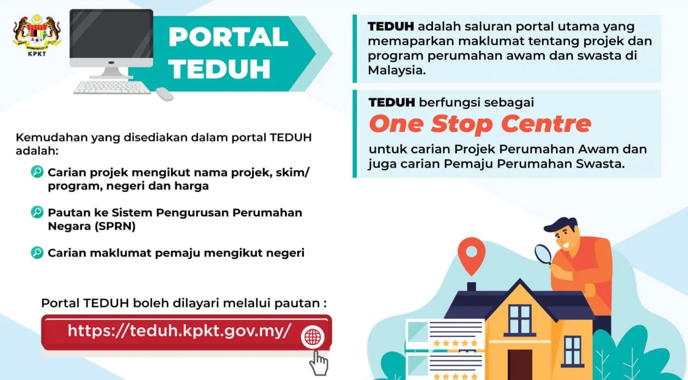

Membeli rumah ialah antara komitmen kewangan terbesar yang akan dibuat oleh kebanyakan orang. Jangan nilai rumah hanya berdasarkan harga, lokasi, rekaan dan promosi ejen. Untuk rumah yang masih dalam pembangunan, siapa yang membangunkannya dan rekod projeknya juga perlu diperiksa.
KPKT sendiri menyediakan panduan kepada pembeli rumah yang merangkumi semakan lesen pemaju, Permit Iklan dan Jualan, status tanah, maklumat projek dan dokumen jualan. KPKT — Tips Kepada Pembeli Rumah
1. Semak kemampuan kewangan dahulu
Sebelum melihat rumah yang ingin dibeli, tentukan jumlah yang benar-benar mampu ditanggung setiap bulan.
Ambil kira bukan sahaja ansuran pinjaman, tetapi juga:
- Deposit dan kos berkaitan pembelian.
- Yuran guaman dan kos transaksi yang berkenaan.
- Insurans atau takaful pembiayaan.
- Maintenance fee dan sinking fund bagi hartanah strata.
- Cukai tanah, cukai taksiran dan utiliti.
- Kos renovasi, perabot dan pindah masuk.
- Simpanan kecemasan selepas pembelian.
Jangan menganggap jumlah pinjaman maksimum yang bank sanggup luluskan sebagai jumlah yang anda wajib pinjam.
2. Semak pemaju — jangan hanya tengok nama besar atau harga promosi
Untuk projek baharu, semak nama syarikat pemaju dan rekod projek terdahulunya.
TEDUH, portal Jabatan Perumahan Negara, menyediakan carian maklumat pemaju dan projek serta semakan Lesen Pemaju Perumahan dan Permit Iklan dan Jualan. KPKT juga menerangkan bahawa pemaju perumahan perlu mempunyai lesen yang sah dan permit iklan serta jualan yang sah. TEDUH — Semakan Lesen & Permit · KPKT — Pelesenan Pemajuan Perumahan
Mengapa rekod pemaju penting?
Bayangkan sebuah syarikat yang hampir tiada rekod pemajuan terdahulu tetapi sedang menawarkan projek baharu dengan 1,800 unit apartment. Keadaan ini tidak membuktikan projek tersebut bermasalah, dan syarikat baharu juga tidak semestinya gagal.
Tetapi ia patut menjadi sebab untuk melakukan due diligence yang lebih mendalam.
Antara soalan yang wajar ditanya:
- Apakah projek terdahulu yang pernah disiapkan oleh kumpulan atau syarikat berkaitan?
- Adakah projek tersebut siap mengikut jadual?
- Bagaimana keadaan bangunan selepas beberapa tahun diduduki?
- Bagaimana pengurusan kecacatan dan aduan pembeli?
- Siapakah syarikat sebenar yang memegang lesen untuk projek ini?
- Adakah terdapat sejarah projek sakit atau terbengkalai yang berkaitan dengan pemaju atau kumpulan syarikat?
KPKT mentakrifkan projek sakit sebagai projek yang mengalami kelewatan melebihi 30% berbanding kemajuan sepatutnya atau telah tamat tempoh Perjanjian Jual Beli, manakala projek terbengkalai mempunyai kriteria khusus termasuk tiada aktiviti ketara di tapak selama enam bulan secara berterusan dalam keadaan yang dinyatakan KPKT. Status projek sakit dan terbengkalai boleh dirujuk melalui TEDUH. KPKT — Pemaju Berstatus Sakit
Tiada rekod bukan sama dengan rekod buruk. Tetapi semakin besar projek dan semakin besar komitmen anda, semakin penting untuk mengetahui siapa yang bertanggungjawab membangunkannya dan apakah bukti keupayaan mereka untuk menyiapkan projek.
3. Semak projek itu sendiri di TEDUH
Jangan berhenti pada laman web pemaju atau brosur jualan. Bandingkan maklumat yang diberikan oleh pemaju dengan rekod rasmi.
Semak perkara seperti:
- Nama dan kod projek.
- Nama pemaju dan kod pemaju.
- Lesen pemaju.
- Permit Iklan dan Jualan.
- Status dan lokasi projek.
- Tarikh jangkaan siap.
- Maklumat projek yang tersedia.
- Status projek sakit atau terbengkalai jika berkaitan.

Portal TEDUH menyediakan carian maklumat pemaju dan projek perumahan. Portal TEDUH
4. Semak status tanah
KPKT menyarankan pembeli menyemak status tanah, termasuk sama ada pegangan bebas atau pajakan, tempoh pajakan jika berkenaan, status Rezab Melayu dan bebanan tertentu. Semakan hakmilik dibuat melalui Pejabat Tanah atau Pejabat Pendaftar Negeri yang berkaitan. KPKT — Tips Kepada Pembeli Rumah

Untuk pembelian bernilai besar, dapatkan nasihat peguam hartanah supaya semakan hakmilik dan kepentingan lain dibuat dengan sewajarnya.
5. Fahami jenis hartanah dan kos selepas membeli
Untuk apartment, kondominium atau hartanah strata, harga jualan hanyalah sebahagian daripada kos memiliki rumah.
Semak:
- Maintenance fee.
- Sinking fund.
- Kemudahan yang benar-benar termasuk dalam pembangunan.
- Nisbah tempat letak kereta kepada unit jika relevan.
- Peraturan pengurusan strata.
- Akses ke pengangkutan, sekolah, klinik dan kemudahan harian.
- Keadaan kawasan sekitar dan pembangunan yang dirancang.
Untuk projek yang mempunyai ribuan unit, fikir juga tentang siapa yang akan menggunakan kemudahan tersebut dan bagaimana kos penyelenggaraan akan ditanggung selepas projek diduduki.
6. Jangan bergantung kepada show unit sahaja
Show unit direka untuk menunjukkan potensi ruang. Ia bukan gambaran lengkap tentang pengalaman memiliki rumah tersebut.
Jika boleh, lawati kawasan projek pada waktu berbeza dan perhatikan:
- Trafik masuk dan keluar.
- Banjir atau sistem saliran.
- Bunyi bising.
- Keselamatan dan pencahayaan.
- Kemudahan awam sebenar.
- Projek pembinaan lain di sekeliling.
- Keadaan kawasan kejiranan selepas waktu pejabat.
Untuk projek yang sudah mempunyai fasa terdahulu, lawati fasa tersebut dan bercakap dengan penduduk jika sesuai. Pengalaman penghuni sebenar boleh membantu anda melihat perkara yang tidak ditunjukkan dalam brosur.
7. Baca dokumen sebelum bayar atau tandatangan
Jangan membuat keputusan hanya berdasarkan penerangan jurujual atau janji lisan.
KPKT menyatakan bahawa brosur pemaju mengandungi maklumat penting seperti nombor lesen, Permit Iklan dan Jualan, status tanah, spesifikasi, keluasan, kemudahan, harga, bilangan unit dan maklumat Pihak Berkuasa Tempatan. KPKT — Tips Kepada Pembeli Rumah
Baca Perjanjian Jual Beli dan dapatkan penjelasan profesional mengenai perkara yang anda tidak faham sebelum menandatangani.
8. Red flags yang patut mencetuskan semakan tambahan
Satu perkara di bawah tidak semestinya bermaksud rumah itu patut dielakkan. Tetapi gabungan beberapa perkara boleh menjadi sebab untuk berhenti seketika dan membuat semakan lanjut:
- Pemaju atau syarikat projek mempunyai rekod pembangunan yang sangat terhad.
- Projek sangat besar berbanding pengalaman pemaju yang dapat disahkan.
- Maklumat pemaju, projek atau lesen sukar disahkan.
- Maklumat dalam bahan pemasaran tidak sepadan dengan rekod rasmi.
- Tekanan untuk membuat bayaran atau menandatangani dengan tergesa-gesa.
- Janji penting hanya diberikan secara lisan dan tidak jelas dalam dokumen.
- Terdapat isu projek terdahulu yang belum dijelaskan dengan memuaskan.
- Struktur syarikat atau pihak yang bertanggungjawab terhadap projek tidak jelas.
Red flag bukan keputusan muktamad. Ia adalah isyarat untuk berhenti dan semak.

Checklist ringkas sebelum membeli
Kemampuan — Saya tahu jumlah kos sebenar, bukan sekadar ansuran bulanan.
>
Pemaju — Saya sudah semak siapa pemaju dan rekod projek terdahulu.
>
Lesen & permit — Saya sudah membuat semakan melalui sumber rasmi.
>
Projek — Saya faham status, saiz dan jadual projek.
>
Tanah — Status hakmilik dan bebanan telah disemak dengan sewajarnya.
>
Strata — Saya faham maintenance fee, sinking fund dan kos pemilikan berterusan.
>
Dokumen — Saya telah membaca dan mendapatkan nasihat mengenai Perjanjian Jual Beli sebelum menandatangani.
>
Red flags — Saya tidak mengabaikan tanda amaran hanya kerana promosi atau harga kelihatan menarik.
Kesimpulan
Rumah yang murah atau nampak menarik di atas kertas belum tentu menjadi pembelian yang baik untuk keadaan kewangan anda.
Untuk projek baharu, due diligence terhadap pemaju sama pentingnya dengan due diligence terhadap rumah itu sendiri. Pemaju yang belum mempunyai track record yang panjang tidak semestinya bermasalah, tetapi pembeli perlu mendapatkan lebih banyak bukti tentang lesen, struktur projek, rekod kumpulan, keupayaan menyiapkan projek dan status projek berkaitan sebelum mengambil komitmen kewangan yang besar.
Jika maklumat penting tidak dapat disahkan, jangan takut untuk berhenti, bertanya dan mendapatkan nasihat profesional sebelum menandatangani.